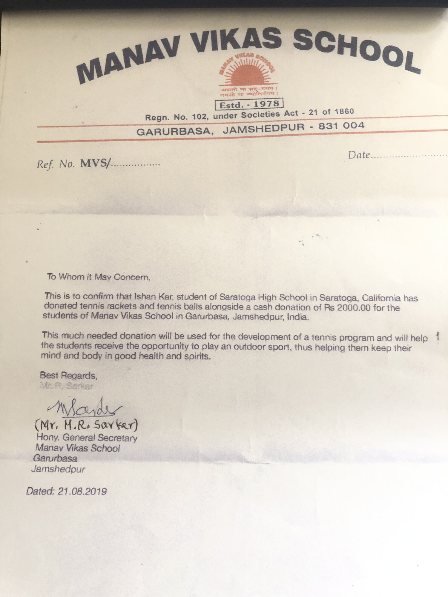
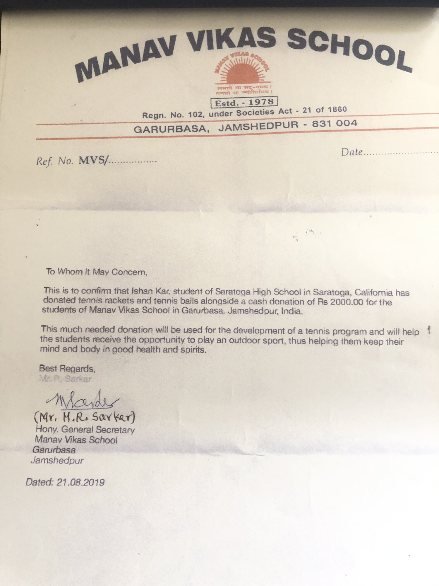
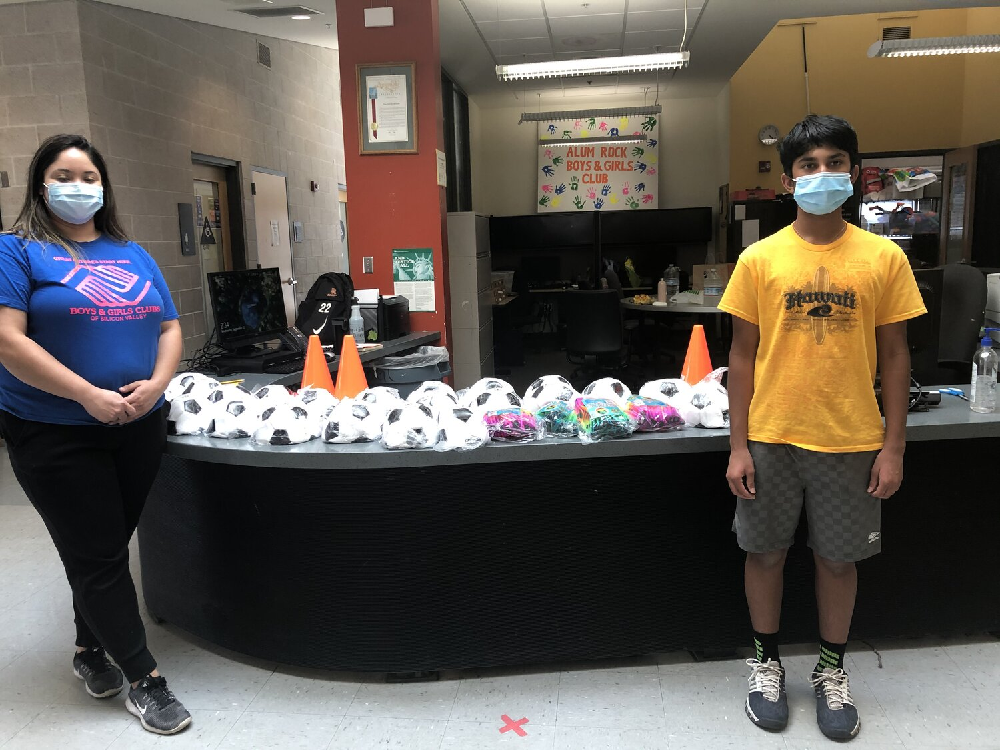
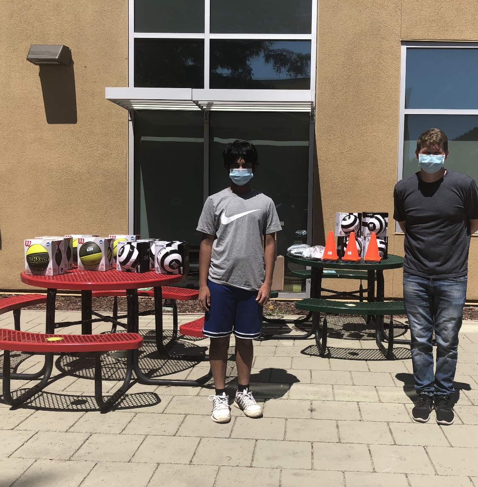
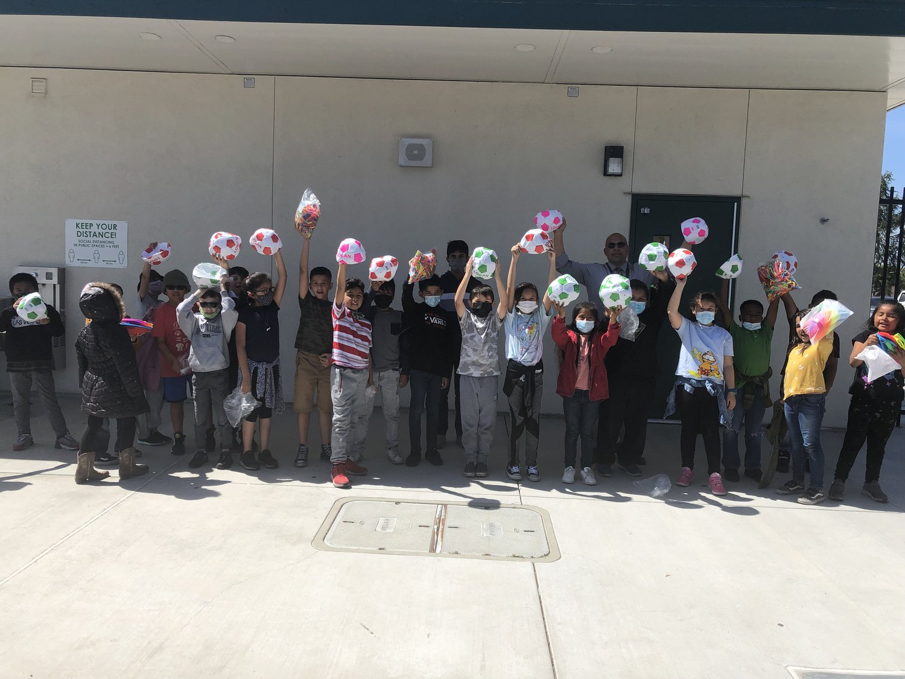

Manav Vikas School in Gaurbasa, Jamshedpur, India
 

This letter is a testimonial of a donation of tennis rackets and tennis balls to the Manav Vikas School in Gaurbasa, Jameshedpur, India.
Boys and Girls Club of Silicon Valley

To whom it may concern,
I first want to start off this email by saying thank you so much on behalf of our organization
for the generous donation of sports equipment. We are all in unprecedented times trying to get
back to some sense of normalcy and with the sports equipment we were able to take a step in the
right direction. Most of our sites are being facilitated through zoom or google meet calls which
means kids are stuck at home all day, there were some many ideas we had as an organization to
get the kids active but were not sure of the equipment they all had at home. With the donation
we were able to get some soccer and dodgeballs out to our members and create a program around
that. We often don't realize some families may have it tougher than others so seeing the smiles
on the kids faces receiving their new equipment was extremely gratifying and a positive moment
in these tough times. Again we can't say it enough, thank you for considering us!
--
Denny Reyes
Site Director
Boys & Girls Clubs of Silicon Valley
Ravenswood Education Foundation
"Because of Sports Equipment for All, hundreds of Ravenswood students received a soccer ball of their very own to take home. This donation meant the world to our students, especially during the holidays when toys may not be guaranteed. Thank you Sports Equipment for All!" - Ravenswood Education Foundation
Latino College Preparatory Academy

“Thank you to the non profit organization “Sports Equipment For All”, for donating to our PE Departments! Our roughly 425 students will put the equipment to use soon!”
Sunnyslope Elementary School

"Ishan's generosity could not have come at a better time for our school. At this moment the
Hollister School District is going through a rough financial time and we were unable to purchase
new playground equipment and art supplies for our students. The current equipment we have is
worn out, has small rips, and some have slow leaks that creates a daily need to inflate them. He
donated dozens of new balls for our students. We immediately put them into use and put them in
our playground ball cart. Now, students have new equipment to play with every day. It is an
absolute joy to hear their laughs and screams of delight as they participate in recess
activities with their friends. We also put the art supplies into immediate use placing them in
various classrooms and the library for students to enjoy. This donation was timely and perfect
for what the students of Sunnyslope School needed. Thank you Ishan!"
Joe Rivas
Principal, Sunnyslope Elementary School
Hollister, CA